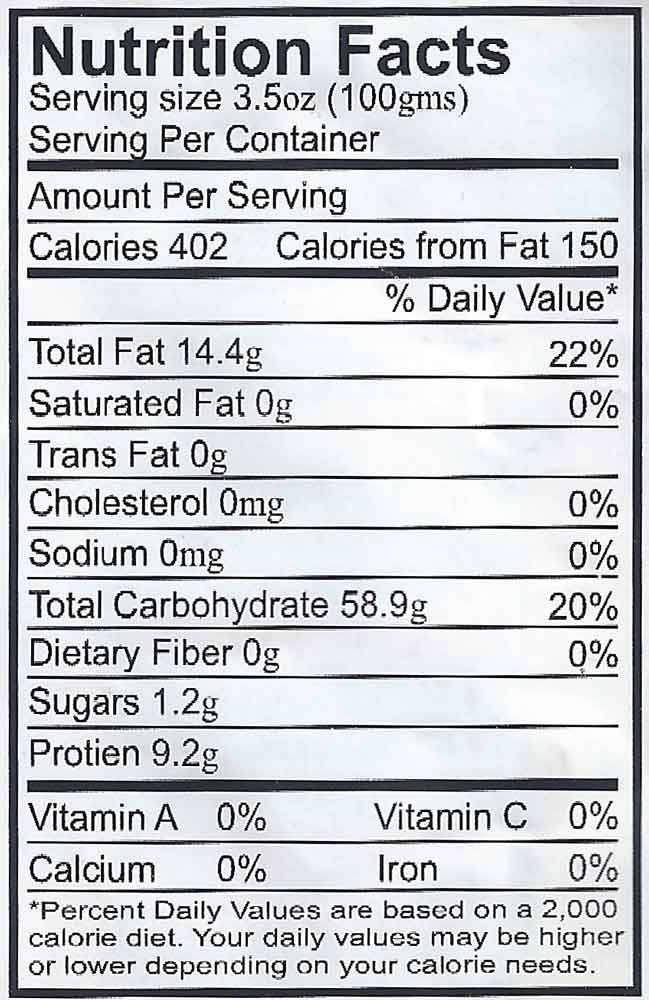

Sapporo Ichiban - 24 Pack
$24.99
This Sapporo Ichiban will take remind you of the delicious flavors of Japanese culture. Noodles are made with high-quality flour and seasuned with beef boulion and green onion. I think I'm 'boutta go eat one of these right now.

Details
Ingredients: ORIENTAL NOODLES: ENRICHED WHEAT FLOUR (WHEAT FLOUR, NIACIN, REDUCED IRON, THIAMINE MONONITRATE, RIBOFLAVIN, FOLIC ACID), PALM OIL (TBHQ AND CITRIC ACID ADDED TO PROTECT FLAVOR), TAPIOCA STARCH, SOY SAUCE (WATER, WHEAT, SOYBEANS, SALT, SODIUM BENZOATE [PRESERVATIVE]), SALT, GUAR GUM, SODIUM CARBONATE, TOCOPHEROLS, POTASSIUM CARBONATE. SOUP BASE: SALT, MONOSODIUM GLUTAMATE, SUGAR, MALTODEXTRIN, SOY SAUCE POWDER (SOY SAUCE [WHEAT, SOYBEANS, SALT], MALTODEXTRIN, SALT), ONION POWDER, LEEK CHIPS, CARAMEL COLOR (CONTAINS SULFITES), SPICES, CHICKEN BROTH POWDER (MALTODEXTRIN, CHICKEN BROTH FLAVOR [CONTAINS CHICKEN BROTH, SALT, FLAVOR]), BEEF STOCK POWDER, DISODIUM SUCCINATE, MALIC ACID, GARLIC POWDER, DISODIUM INOSINATE, DISODIUM GUANYLATE, CORN OIL, SODIUM CITRATE, SESAME OIL.
Product features
Sapporo?? Ichiban Japanese Style Noodles ; Original Flavored Soup. With natural and artificial flavors. It is a traditional quality of Sapporo Ichiban. It can be cooked in 3 minutes.
- Cook in 3 minutes
Traditional quality Of sapporo ICHIBAN
Special Features
Traditional quality Of sapporo ichiban